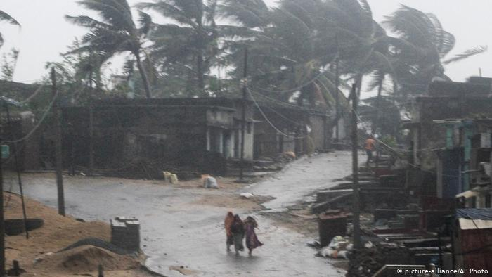

"Bei eiem Monsunregen fallen in kürzester
Zeit grosse Mengen an Wasser, der Boden kann diese Mengen nicht schnell genug
aufnehmen, dadurch kommt es zu Überschwemmungen. Meisst von Mai bis September."
Dürreperioden
"In den Monaten in denen kein Monsunregen vorkommt ist,
kommt es oft zu Dürreperioden. Dabei trocknet die Erdoberfläche aus und
Ernte geht verloren oder Nutztiere sterben."
Zyklone
"Tropische Wirbelstürme die sich über dem indischen Ozean bilden.
Kommen meisst vor und nach dem Sommermonsun."
Seebeben und Tsunamis
"Bei den Plattengrenzen (Bild) entstehen spannungen, also in
weiterer Folge Seebeben. Die dadurch freigesetzte Druckwelle setzt die Wassermassen in bewegung und
kommt in der Form eines Tsunamis an die Küsten."
Die verherendsten Umweltkatastrophen der letzen Jahre:
20.08.2018 - Monsun
"Jahrhundertflut in Kerala (Südindien),
es starben mehr als 400 Menschen"
11.10.2018 - Zyklon
"Kräftiger Tropensturm an der Ostküste Indiens, mehr als
300.000 Menschen evakuiert, 8 starben. Windgeschwindigkeiten bis 165 km/h."

3.5.2018 - Dürreperioden
"Hitzewelle, im landesinneren teils über 50°C;
heiße, trockene Luft, auch in Pakistan extreme Hitze"